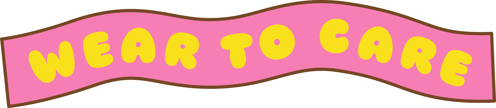
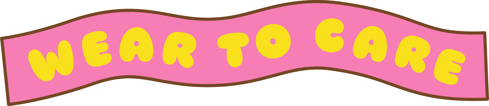
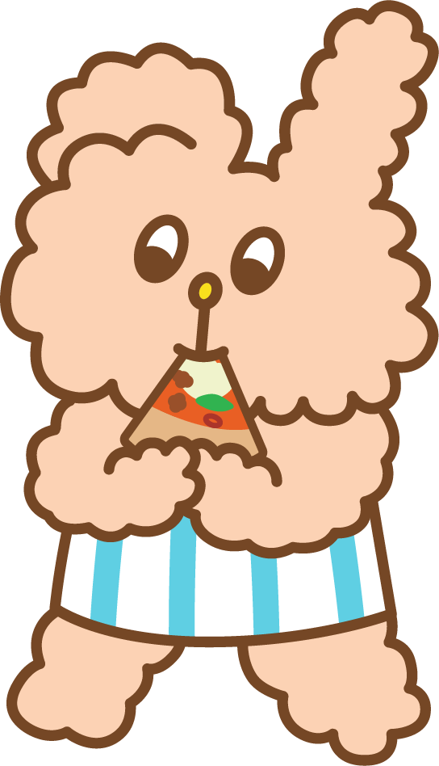
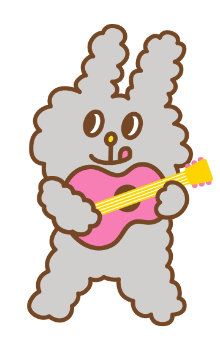
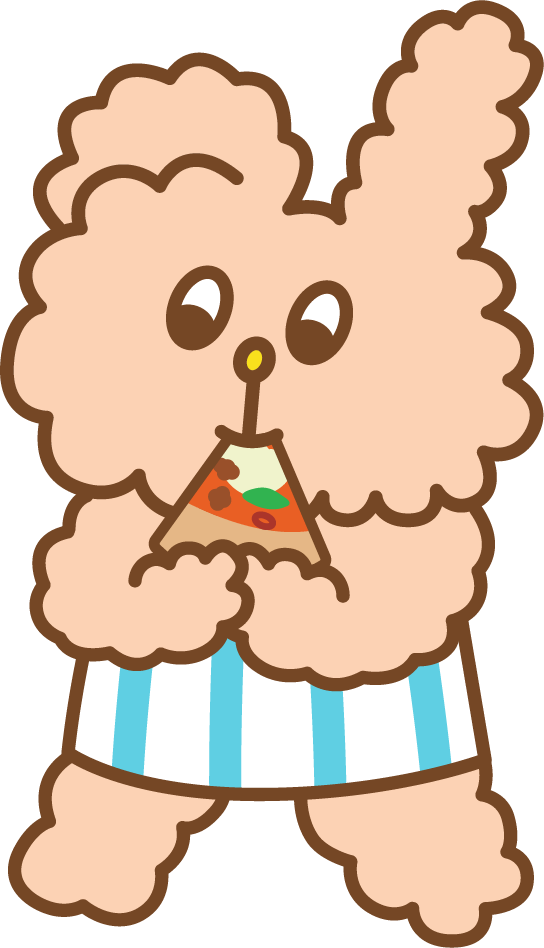
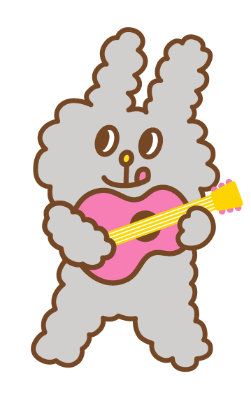
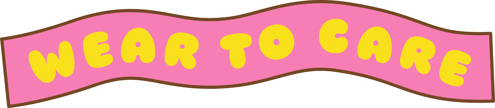
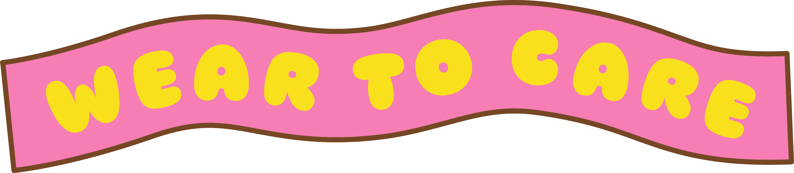
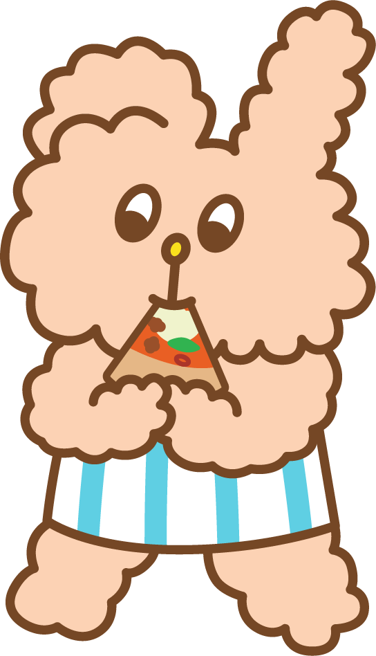
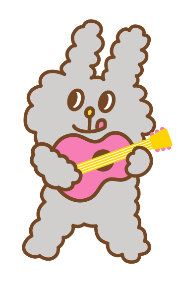

香港公益金每年透過舉辦各式各樣的籌款活動，將巿民踴躍捐輸的善款，不扣除任何行政開支，全數撥捐逾160間社會福利會員機構，支援六大範疇的社福服務，包括兒童及青年服務、安老服務、家庭及兒童福利服務、醫療及保健服務、復康及善導服務以及社區發展，每年受惠人次超過350萬。公益金的行政費用來自慈善夥伴 ─ 香港賽馬會的贊助，以及於各項基金的穩健投資收益，這獨特的運作模式亦令香港公益金成功履行捐款者信托人的使命。

 


「公益金便服日」自1993年首次舉辦以來，現已成為公益金其中一個廣受社會各界人士歡迎的籌款活動。參加者只需捐款港幣 70 元或以上(學生不設最低捐款額)，
便可於便服日活動當天穿上喜愛的便服上班或上學，共襄善舉。
活動已定於2025年10月28日(星期二)舉行，為使參加者更投入這項有意義的活動，
每年便服日都設有不同類型的主題或活動，今年繼續以「WEAR TO CARE」作主題，
鼓勵香港人穿上喜愛的便服行善，把愛心傳遞，關懷及鼓勵身邊的人，
「WEAR TO CARE」!


 

香港公益金每年透過舉辦各式各樣的籌款活動，將巿民踴躍捐輸的善款，不扣除任何行政開支，全數撥捐逾160間社會福利會員機構，支援六大範疇的社福服務，包括兒童及青年服務、安老服務、家庭及兒童福利服務、醫療及保健服務、復康及善導服務以及社區發展，每年受惠人次超過350萬。公益金的行政費用來自慈善夥伴 ─ 香港賽馬會的贊助，以及於各項基金的穩健投資收益，這獨特的運作模式亦令香港公益金成功履行捐款者信托人的使命。
參加者可透過以下方法捐款：

以劃線支票形式，
支票抬頭請寫上「香港公益金」；或

1
把善款存入公益金於
中國銀行(香港)(賬號 : 012-874-0-008588-4) 或
恒生銀行(賬號: 280-157553-001) 之戶口；或
2
透過可以支援轉數快的電子錢包
或手機應用程式，
輸入公益金的快速支付系統識別碼
1034495 或 1902584
或掃瞄右側二維碼捐款。
透過可以支援轉數快的電子錢包或手機應用程式，
輸入公益金的快速支付系統識別碼
1034495 或 1902584
或掃瞄下方二維碼捐款。

*透過轉數快捐款後，需提交載有交易日期及時間的交易截圖，及提供捐款者姓名和銀行戶口持有人姓名，以便核數。
3


今年公益金便服日特別設計 WEAR TO CARE 有獎遊戲，誠邀你與家人朋友一同參與。
參加者必須讚好「香港公益金」Facebook 專頁 或追蹤「香港公益金」Instagram帳戶，讚好公益金發佈的 WEAR TO CARE 有獎遊戲貼文*，於留言處選出貼文中心儀穿搭造型，並以不多於 50 字解釋原因或分享自己為今年便服日準備的造型，再加上 #weartocare 的 hashtag，以及標註最少3位朋友 (必須為 Facebook 或 Instagram 帳戶)，就有機會贏取豐富獎品！
公益金將選出 40 個最具心思及創意的留言為得獎者，獎品包括：
頭獎 (5名)：可獲得由 SKECHERS 贊助的 鞋履免費換領券一張 (可換領任何價值之鞋款乙對) ;
二奬 (10名)：可獲得由富林工程營造有限公司贊助的 city'super 禮品卡一張 (價值HK$500) ;
三獎 (15名)：由貝路加有限公司贊助的Papery Bunni Konbiny 環保便當盒一個
或 保溫瓶一個;
四獎 (10名)：由貝路加有限公司贊助的Papery Bunni Konbiny 環保飲管一枝
及 環保餐具套裝一份。
禮品款式及顏色將隨機派發，恕不能選擇。
頭獎 (5名)：
SKECHERS鞋履免費換領券
二奬 (10名)：
city'super 禮品卡

三獎 (15名)：
Papery Bunni Konbiny
環保便當盒或保溫瓶


四獎 (10名) ：
Papery Bunni Konbiny
環保飲管及環保餐具


#註：圖片只供參考，禮品款式及顏色將隨機派發。
活動由2025年10月2日中午12時正開始，至10月28日下午6時正結束，結果將於11月7日在此網頁及公益金 Facebook 專頁及 Instagram 帳戶公布。
*WEAR TO CARE 有獎遊戲貼文將於2025年10月份於公益金 Facebook 及 Instagram 發布，敬請留意公益金 Facebook 專頁及 Instagram 帳戶。遊戲詳情請參閱條款及細則。
請各位得獎者於2025年11月17日或之前以參與有獎遊戲的Facebook或Instagram帳戶
inbox以下資料至 香港公益金Facebook 或 Instagram 安排領獎：


今年公益金邀請了人氣 IP Bunni Konbiny 兔子便利商店 合作宣傳公益金便服日 2025，並特別設計了兩款便服日 2025 的主題背景供參加者下載。
參加者可自行將背景圖片裁剪成合適的尺寸，便可應用於不同電子設備，包括手機、電腦、平板電腦、智能手錶等，隨時隨地與家人朋友分享寓行善於生活的正面信息。

立即下載


香港公益金有賴慈善夥伴 — 香港賽馬會的慷慨資助，得以將全數善款，
不扣除任何行政開支，100%撥捐逾160間社會福利會員機構，惠澤社群。
香港公益金有賴慈善夥伴 — 香港賽馬會的慷慨資助，得以將全數善款，
不扣除任何行政開支，100%撥捐逾160間社會福利會員機構，惠澤社群。